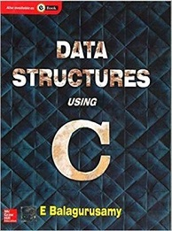
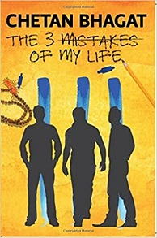

Books Related To My Subject:
Programming In ANSI
Data Structures Using C

Buy At Amazon
 Buy At Amazon
Buy At Amazon
The book ‘Programming in ANSI C’ has been developed specifically to meet the needs of a first-time learner who is keen to be a programmer. Distinguished as one of the bestsellers in the market, the book is taking forward another step in pursuit of perfection with this new edition. It follows a hierarchical approach by explaining the concepts from elementary to advanced level. The exhaustive coverage of critical concepts, such as Arrays, Strings, Functions, Pointers, Self-referential Structures, Dynamic Memory Allocation, etc. makes this title a complete reference guide for the beginners as well as life-long learners. Rich pedagogy,challenging programming problems, and concretely curated appendices enhance the utility of the book and make it a lasting resource for students and instructors.
From the most popular and celebrated author in Computing, Dr. E.Balagurusamy, Data Structures Using C covers a wide range of data structures courses along with rich variety of pedagogical features and aids.The strength of this book lies in its simple and lucid presentation of the subject which will help beginners in better understanding of the concepts. It adopts a student-friendly approach to the subject matter with many solved and unsolved examples, illustrations and well structured C programs.
Novels:
The 3 Mistakes Of My Life

Buy At Amazon
Half Girlfriend
The Alchemist
The 3 Mistakes of my life is the third novel written by eminent Indian Author Chetan Bhagat. Based on cricket, business and religion, the novel is set against the backdrop of beautiful city Ahmedabad. Revolving around three young Indian boys Omi, Ishaan and Govind, the book goes on to narrate how the three are trying their best to make ends meet in the city.
Based on real events, the book starts with a dramatic twist, where Bhagat is reading an e-mail sent by some young person Govind, who has consumed sleeping pills for some reason and is writing to Bhagat, while waiting for his life to end. This book revolves around the three major mistakes committed by Govind in his life; he also happens to be the central character of the novel.
 Buy At Amazon
Buy At Amazon
Half Girlfriend is an Indian English coming of age, young adult romance novel by Indian author Chetan Bhagat.The novel, set in rural Bihar, New Delhi, Patna, and New York, is the story of a Bihari boy in quest of winning over the girl he loves.This is Bhagat's sixth novel which was released on 1 October 2014 by Rupa Publications. The novel has also been published in Hindi and Gujarati.
Dedicated to "non English-types", as Chetan Bhagat wrote, the book divulges the sentiments and linguistic struggles of a backward rural Bhojpuri-laced Hindi-speaking boy from Bihar as he enrolls himself at the prestigious English-medium St. Stephen’s College, New Delhi, and falls in love with a "high class English-speaking rich Delhi girl" schooled at Modern School, New Delhi. The girl does not admit the relationship but agrees to be his "half girlfriend".
 Buy At Amazon
Buy At Amazon
The Alchemist follows the journey of an Andalusian shepherd boy named Santiago. Believing a recurring dream to be prophetic, he asks a Gypsy fortune teller in the nearby town about its meaning. The woman interprets the dream as a prophecy telling the boy that he will discover a treasure at the Egyptian pyramids.
Early into his journey, he meets an old king named Melchizedek, or the king of Salem, who tells him to sell his sheep, so as to travel to Egypt, and introduces the idea of a Personal Legend. Your Personal Legend "is what you have always wanted to accomplish. Everyone, when they are young, knows what their Personal Legend is.